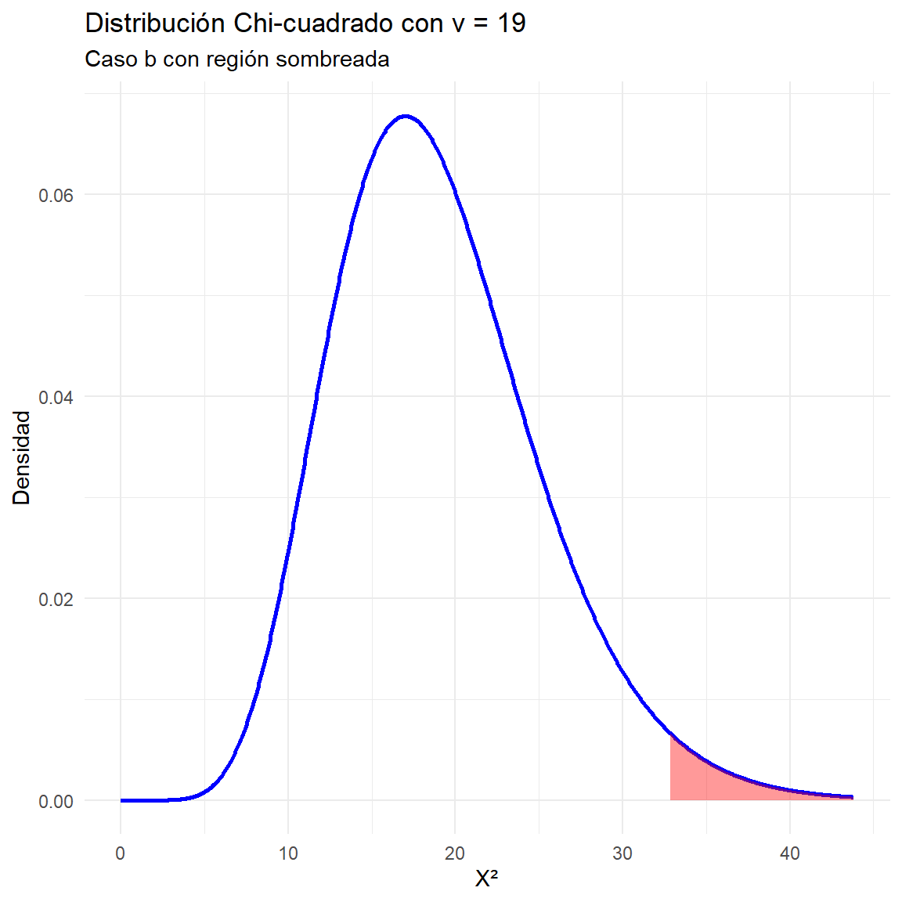
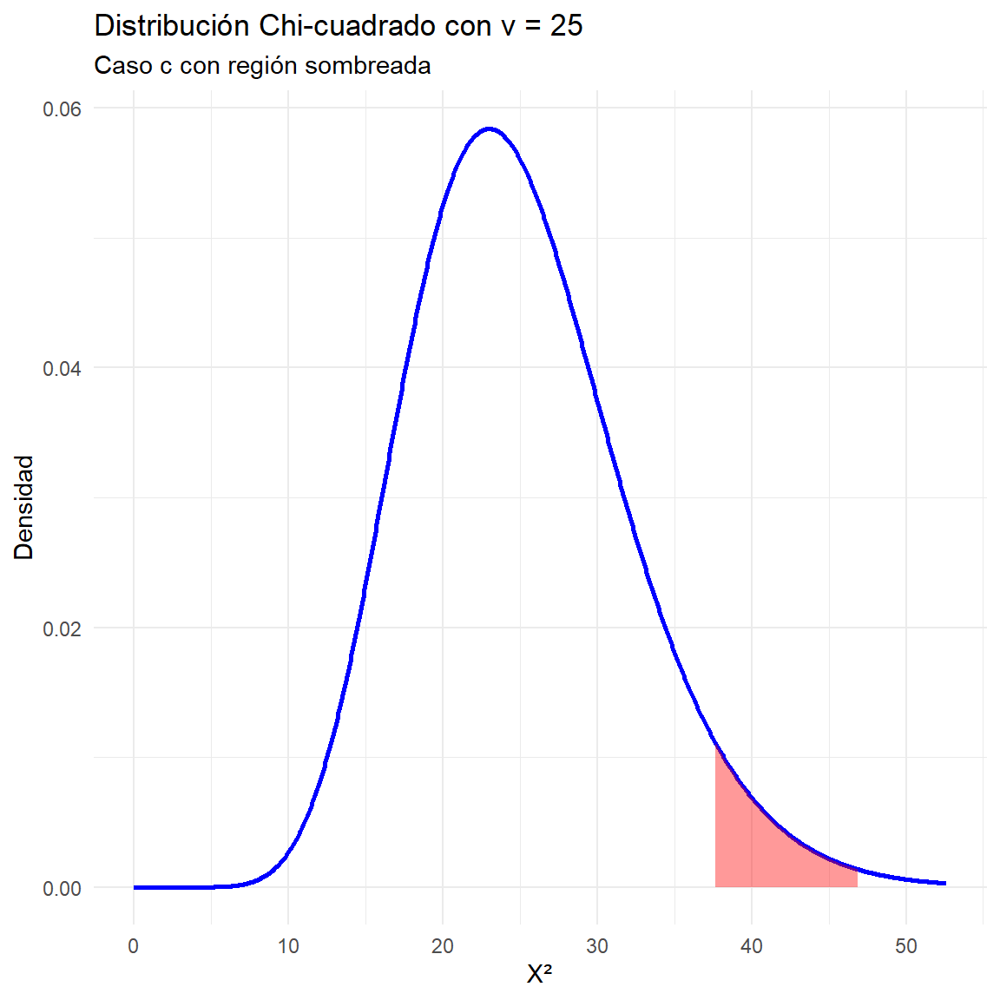
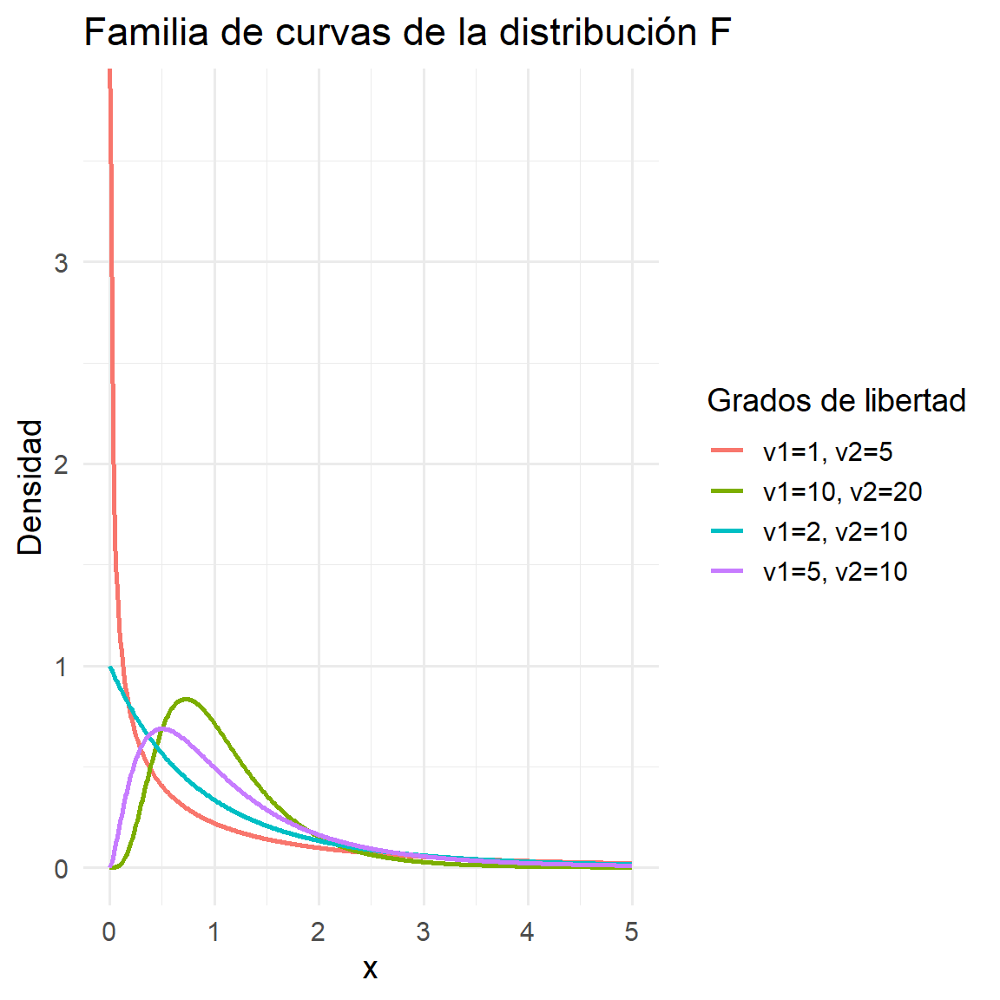
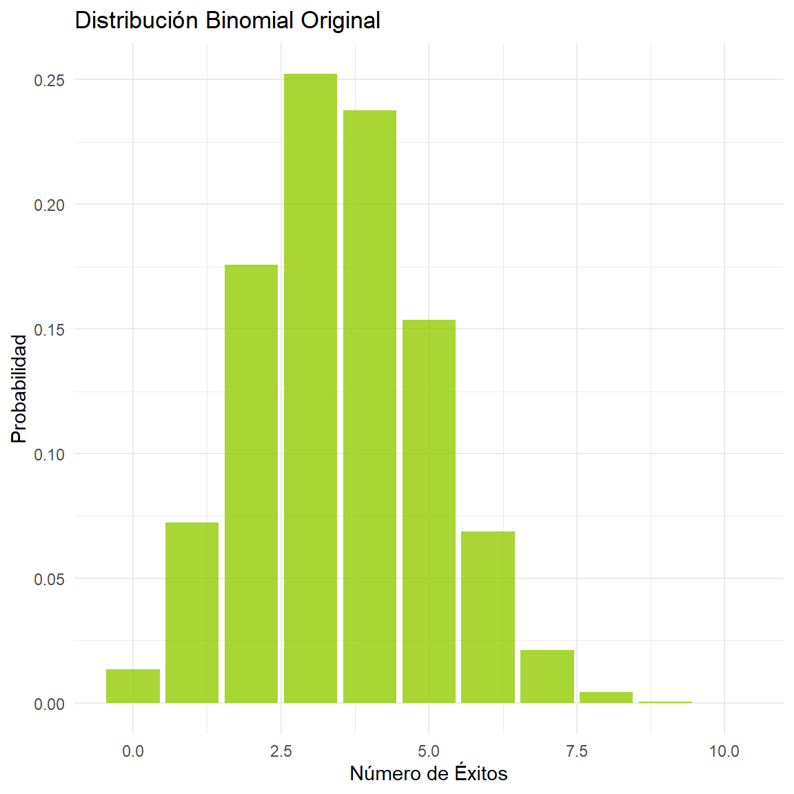
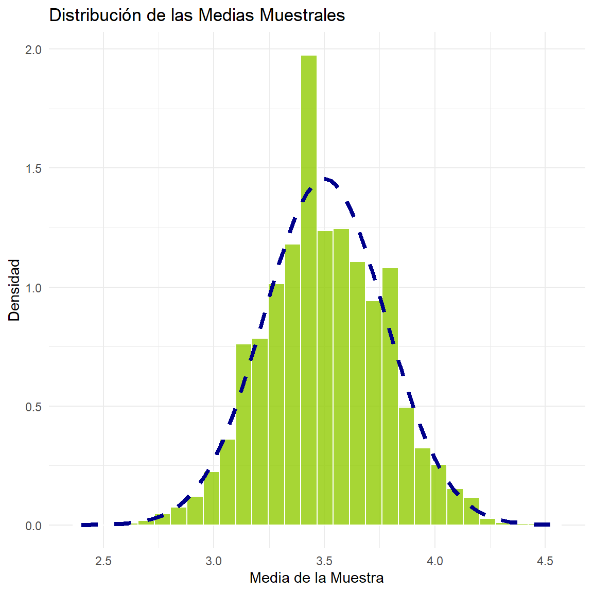
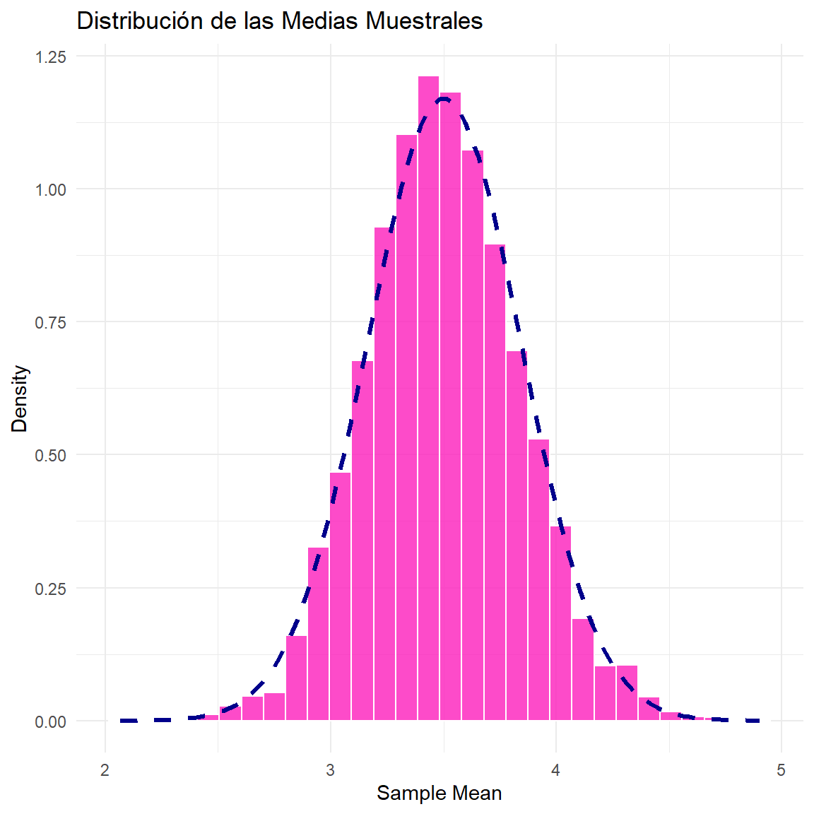

Ver código
options(
knitr.table.format = "html",
scipen = 999
)options(
knitr.table.format = "html",
scipen = 999
)ipak <- function(pkg){
options(repos = c(CRAN = "https://cloud.r-project.org"))
new.pkg <- pkg[!(pkg %in% rownames(installed.packages()))]
if(length(new.pkg)) install.packages(new.pkg, dependencies = TRUE)
invisible(
lapply(pkg, function(p)
suppressPackageStartupMessages(
library(p, character.only = TRUE)
)
)
)
}
packages <- c("tidyverse","kableExtra","ggplot2","readxl")
ipak(packages)La distribución normal, también conocida como distribución gaussiana o campana de Gauss, es la distribución de probabilidad continua más importante en la estadística.
Su importancia radica en que muchos fenómenos naturales, sociales y económicos siguen este patrón.
La distribución normal es la distribución de probabilidad continua más usada en estadística y una herramienta fundamental para modelar una inmensa variedad de fenómenos en las ciencias, la ingeniería y la economía. Su popularidad se debe a una propiedad matemática conocida como el Teorema del Límite Central, que establece que la suma o el promedio de un gran número de variables aleatorias independientes (sin importar su distribución original) tiende a seguir una distribución normal.
Características Clave
La distribución normal es un tipo de distribución de probabilidad continua. Esto significa que la variable aleatoria puede tomar cualquier valor dentro de un rango determinado. Se representa por una curva simétrica en forma de campana, donde la mayor parte de los datos se agrupan alrededor del valor central.
Forma de Campana: La distribución es simétrica alrededor de su media, creando una curva con forma de campana. El punto más alto de la campana es la media.
Media, Mediana y Moda Coincidentes: En una distribución normal perfecta, estos tres valores son iguales y se encuentran en el centro de la curva.
Asintótica al Eje Horizontal: La curva se extiende indefinidamente en ambas direcciones, acercándose al eje x pero sin llegar a tocarlo.
Regla Empírica: Alrededor del 68% de los datos se encuentran dentro de una desviación estándar de la media (μ±σ), el 95% dentro de dos desviaciones estándar (μ±2σ), y el 99.7% dentro de tres desviaciones estándar (μ±3σ).
Parámetros
La distribución normal está completamente definida por dos parámetros:
Media (μ):Indica la ubicación del centro de la curva y el valor más probable.
Varianza (σ^2) o Desviación Estándar (σ): Mide la dispersión o variabilidad de los datos. Una σ grande resulta en una curva más ancha y aplanada, mientras que una σ pequeña crea una curva más estrecha y alta.
Fórmulas
La fórmula principal de la distribución normal es la función de densidad de probabilidad (FDP). Esta función no calcula la probabilidad de un punto exacto, sino la densidad de probabilidad en ese punto.
Función de Densidad de Probabilidad (FDP):
f(x) = \frac{1}{\sigma \sqrt{2\pi}} \, e^{-\frac{1}{2}\left( \frac{x - \mu}{\sigma} \right)^2}
Donde:
x: es el valor de la variable aleatoria.
μ: es la media.
σ: es la desviación estándar.
e: es el número de Euler (aproximadamente 2.71828).
π: es la constante pi (aproximadamente 3.14159).
Para calcular probabilidades, se utiliza la distribución normal estándar, que tiene una media de 0 y una desviación estándar de 1. Cualquier variable normal puede estandarizarse usando la siguiente fórmula:
Fórmula de Estandarización (puntuación Z):
Z = \frac{x - \mu}{\sigma}
La puntuación Z nos dice cuántas desviaciones estándar está un valor dado de la media. Luego, se usan tablas o software estadístico para encontrar las probabilidades correspondientes.
Ejercicios
1. Un investigador científico informa que unos ratones vivirán un promedio de 40 meses cuando sus dietas se restringen drásticamente y después se enriquecen con vitaminas y proteínas. Suponiendo que la vidas de tales ratones se distribuyen normalmente con una desviación estándar de 6.3 meses, encuentre la probabilidad de que un ratón dado vivirá:
Parámetros
media <- 40
desviacion_estandar <- 6.3 Solución de los incisos
Cuál es la probabilidad de que un ratón dado vivirá más de 32 meses.
prob_mas_de_32 <- 1 - pnorm(32, mean = media, sd = desviacion_estandar)
cat("a)", round(prob_mas_de_32, 4), "\n")a) 0.8979 La probabilidad de que un ratón viva más de 32 meses es 0.8979.
Gráfica
media <- 40
desviacion_estandar <- 6.3
rango <- c(media - 3 * desviacion_estandar, media + 3 * desviacion_estandar)
ggplot(data.frame(x = rango), aes(x = x)) + # Curva de la distribución normal
stat_function(fun = dnorm, args = list(mean = media, sd = desviacion_estandar),
n = 500, color = "black") + # Resaltar el área de interés (X > 32)
geom_area(stat = "function", fun = dnorm, args = list(mean = media, sd = desviacion_estandar),
fill = "steelblue", xlim = c(32, rango[2]), alpha = 0.5) + # Etiquetas y títulos
labs( title = "Distribucion Normal", subtitle = "Probabilidad de vivir más de 32 meses", x = "Vida en meses", y = "Densidad de Probabilidad" ) + theme_bw() + # Línea para el valor de 32
geom_vline(xintercept = 32, linetype = "dashed", color = "red") +
geom_text(aes(x = 32, y = 0.01, label = "32 meses"), hjust = -0.1, vjust = -1)
La probabilidad de que un ratón viva más de 32 meses es 89.79%.
Cuál es la probabilidad de que un ratón dado viva menos de 28 meses.
prob_menos_de_28 <- pnorm(28, mean = media, sd = desviacion_estandar)
cat("b)", round(prob_menos_de_28, 4), "\n")b) 0.0284 La probabilidad de que un ratón viva menos de 28 meses es 0.0284.
Gráfica
media <- 40
desviacion_estandar <- 6.3
rango <- c(media - 3 * desviacion_estandar, media + 3 * desviacion_estandar)
ggplot(data.frame(x = rango), aes(x = x)) + # Curva de la distribución normal
stat_function(fun = dnorm, args = list(mean = media, sd = desviacion_estandar),
n = 500, color = "black") + # Resaltar el área de interés (X < 28)
geom_area(stat = "function", fun = dnorm, args = list(mean = media, sd = desviacion_estandar),
fill = "orange", xlim = c(rango[1], 28), alpha = 0.5) + # Etiquetas y títulos
labs( title = "Distribucion Normal", subtitle = "Probabilidad de vivir menos de 28 meses", x = "Vida en meses", y = "Densidad de Probabilidad" ) + theme_bw() + # Línea para el valor de 28
geom_vline(xintercept = 28, linetype = "dashed", color = "red") +
geom_text(aes(x = 28, y = 0.01, label = "28 meses"), hjust = 1.1, vjust = -1)
La probabilidad de que un ratón viva menos de 28 meses es 2.84%.
Cual es la probabilidad de que un ratón dado vivirá entre 37 y 49 meses.
prob_c_superior <- pnorm(49, mean = media, sd = desviacion_estandar)
prob_c_inferior <- pnorm(37, mean = media, sd = desviacion_estandar)
prob_c <- prob_c_superior - prob_c_inferior
cat("c)", round(prob_c, 4), "\n")c) 0.6065 La probabilidad de que un ratón viva entre 37 y 49 meses es 0.6065.
Gráfica
media <- 40
desviacion_estandar <- 6.3
rango <- c(media - 3 * desviacion_estandar, media + 3 * desviacion_estandar)
ggplot(data.frame(x = rango), aes(x = x)) + # Curva de la distribución normal
stat_function(fun = dnorm, args = list(mean = media, sd = desviacion_estandar),
n = 500, color = "black") + # Resaltar el área de interés (37 < X < 49)
geom_area(stat = "function", fun = dnorm, args = list(mean = media, sd = desviacion_estandar),
fill = "purple", xlim = c(37, 49), alpha = 0.5) + # Etiquetas y títulos
labs( title = "Distribucion Normal", subtitle = "Probabilidad de vivir entre 37 y 49 meses", x = "Vida en meses", y = "Densidad de Probabilidad" ) + theme_bw() + # Líneas para los valores de 37 y 49
geom_vline(xintercept = 37, linetype = "dashed", color = "red") +
geom_vline(xintercept = 49, linetype = "dashed", color = "red") +
geom_text(aes(x = 37, y = 0.01, label = "37"), hjust = 1.1, vjust = -1) +
geom_text(aes(x = 49, y = 0.01, label = "49"), hjust = -0.1, vjust = -1)
La probabilidad de que un ratón viva entre 37 y 49 meses es 60.65%.
2. Una máquina expendedora de bebidas gaseosas se regula para que sirva un promedio de 200 mililitros por vaso. Si la cantidad de bebida se distribuye normalmente con una desviación estándar igual a 15 mililitros,
¿Qué fracción de los vasos contendrá más de 224 mililitros?
¿Cuál es la probabilidad de que un vaso contenga entre 191 y 209 mililitros?
¿Cuántos vasos probablemente se derramarán si se utilizan vasos de 230 mililitros para las siguientes 1000 bebidas?
Parámetros
media <- 200
desviacion_estandar <- 15Solución de los incisos
¿Qué fracción de los vasos contendrá más de 224 mililitros?
prob_a <- 1 - pnorm(224, mean = media, sd = desviacion_estandar)
cat("a)", round(prob_a, 4), "\n")a) 0.0548 La probabilidad de que una fraccion de vasos contendrá más de 224 mililitros es 0.0548.
Gráfica
rango <- c(media - 3 * desviacion_estandar, media + 3 * desviacion_estandar)
ggplot(data.frame(x = rango), aes(x = x)) +
stat_function(fun = dnorm, args = list(mean = media, sd = desviacion_estandar)) +
geom_area(stat = "function", fun = dnorm, args = list(mean = media, sd = desviacion_estandar),
fill = "coral", xlim = c(224, max(rango)), alpha = 0.6) +
labs( title = "Probabilidad de que un vaso contenga más de 224 ml", x = "Cantidad de bebida (ml)", y = "Densidad de probabilidad" ) +
geom_vline(xintercept = 224, linetype = "dashed", color = "red") + theme_minimal()
La probabilidad de que una fraccion de vasos contendrá más de 224 mililitros es 54.8%.
¿Cuál es la probabilidad de que un vaso contenga entre 191 y 209 mililitros?
media <- 200
desviacion_estandar <- 15
prob_b_superior <- pnorm(209, mean = media, sd = desviacion_estandar)
prob_b_inferior <- pnorm(191, mean = media, sd = desviacion_estandar)
prob_b <- prob_b_superior - prob_b_inferior
cat("b)", round(prob_b, 4), "\n")b) 0.4515 La probabilidad de que un vaso contenga entre 191 y 209 mililitros es de 0.4515.
Gráfica
rango <- c(media - 3 * desviacion_estandar, media + 3 * desviacion_estandar)
ggplot(data.frame(x = rango), aes(x = x)) +
stat_function(fun = dnorm, args = list(mean = media, sd = desviacion_estandar)) +
geom_area(stat = "function", fun = dnorm, args = list(mean = media, sd = desviacion_estandar),
fill = "darkgreen", xlim = c(191, 209), alpha = 0.6) +
labs( title = "Probabilidad de un vaso entre 191 ml y 209 ml", x = "Cantidad de bebida (ml)", y = "Densidad de probabilidad" ) +
geom_vline(xintercept = 191, linetype = "dashed", color = "red") +
geom_vline(xintercept = 209, linetype = "dashed", color = "red") +
theme_minimal()
La probabilidad de que un vaso contenga entre 191 y 209 mililitros es de 45.15%.
¿Cuántos vasos probablemente se derramarán si se utilizan vasos de 230 mililitros para las siguientes 1000 bebidas?
media <- 200
desviacion_estandar <- 15
total_vasos <- 1000
prob_derramarse <- 1 - pnorm(230, mean = media, sd = desviacion_estandar)
vasos_derramados <- prob_derramarse * total_vasos
cat("c)", round(vasos_derramados), "vasos\n")c) 23 vasosSi se utilizan vasos de 230 mililitros para las siguientes 1000 bebidas probablemente se derramarán 23 vasos.
Gráficas
rango <- c(media - 3 * desviacion_estandar, media + 3 * desviacion_estandar)
ggplot(data.frame(x = rango), aes(x = x)) +
stat_function(fun = dnorm, args = list(mean = media, sd = desviacion_estandar)) +
geom_area(stat = "function", fun = dnorm, args = list(mean = media, sd = desviacion_estandar),
fill = "purple", xlim = c(230, max(rango)), alpha = 0.6) +
labs( title = "Probabilidad de que un vaso se derrame", x = "Cantidad de bebida (ml)", y = "Densidad de probabilidad" ) +
geom_vline(xintercept = 230, linetype = "dashed", color = "red") +
theme_minimal()
Si se utilizan vasos de 230 mililitros para las siguientes 1000 bebidas probablemente se derramarán 23 vasos.
3. Un abogado viaja todos los días de su casa en los suburbios a su ofi cina en el centro de la ciudad. El tiempo promedio para un viaje sólo de ida es 24 minutos, con una desviación estándar de 3.8 minutos. Suponga que la distribución de los tiempos de viaje está distribuida normalmente.
¿Cuál es la probabilidad de que un viaje tome al menos 1/2 hora?
Si la oficina abre a las 9:00 A.M. y él sale diario de su casa a las 8:45 A.M., ¿qué porcentaje de las veces llegará tarde al trabajo?
Si sale de su casa a las 8:35 A.M. y el café se sirve en la oficina de 8:50 A.M. a 9:00 A.M., cuál es la probabilidad de que se pierda el café?
Encuentre la longitud de tiempo por arriba de la cual encontramos e1 15% de los viajes más lentos.
Encuentre la probabilidad de que 2 de los siguientes 3 viajes tomen al menos 1/2 hora.
Parámetros
media <- 24
desviacion <- 3.8Solución a los incisos
¿Cuál es la probabilidad de que un viaje tome al menos 1/2 hora?
media <- 24
desviacion <- 3.8
prob_a <- 1 - pnorm(30, mean = media, sd = desviacion)
cat("a)", round(prob_a, 4), "\n")a) 0.0572 La probabilidad de que un viaje tome al menos 1/2 hora es de 0.0572.
Gráfica
rango <- c(media - 3 * desviacion, media + 3 * desviacion)
ggplot(data.frame(x = rango), aes(x = x)) +
stat_function(fun = dnorm, args = list(mean = media, sd = desviacion), n = 500) +
geom_area(stat = "function", fun = dnorm, args = list(mean = media, sd = desviacion), fill = "coral", xlim = c(30, max(rango)), alpha = 0.6) +
labs(title = "Distribucion Normal", x = "Tiempo de viaje (minutos)", y = "Densidad de Probabilidad") +
geom_vline(xintercept = 30, linetype = "dashed", color = "red") +
theme_minimal()
La probabilidad de que un viaje tome al menos 1/2 hora es de 5.72%.
Si la oficina abre a las 9:00 A.M. y él sale diario de su casa a las 8:45 A.M., ¿qué porcentaje de las veces llegará tarde al trabajo?
prob_b <- 1 - pnorm(15, mean = media, sd = desviacion)
porcentaje_b <- prob_b * 100
cat("b)", round(porcentaje_b, 2), "%\n")b) 99.11 %Si la oficina abre a las 9:00 A.M. y él sale diario de su casa a las 8:45 A.M. 99.11 % llegará tarde al trabajo.
Gráfica
rango <- c(media - 3 * desviacion, media + 3 * desviacion)
ggplot(data.frame(x = rango), aes(x = x)) +
stat_function(fun = dnorm, args = list(mean = media, sd = desviacion), n = 500) +
geom_area(stat = "function", fun = dnorm, args = list(mean = media, sd = desviacion),fill = "#3de3c2", xlim = c(15, max(rango)), alpha = 0.6) +
labs(title = "Distribucion Normal", x = "Tiempo de viaje (minutos)", y = "Densidad de Probabilidad") +
geom_vline(xintercept = 15, linetype = "dashed", color = "red") + theme_minimal()
Si la oficina abre a las 9:00 A.M. y él sale diario de su casa a las 8:45 A.M. 99.11 % llegará tarde al trabajo.
Si sale de su casa a las 8:35 A.M. y el café se sirve en la oficina de 8:50 A.M. a 9:00 A.M., cuál es la probabilidad de que se pierda el café?
prob_c_antes <- pnorm(15, mean = media, sd = desviacion)
prob_c_despues <- 1 - pnorm(25, mean = media, sd = desviacion)
prob_c <- prob_c_antes + prob_c_despues
cat("c)", round(prob_c, 4), "\n")c) 0.4051 La probabilidad de que se pierda el café es de 0.4051.
Gráficas
rango <- c(media - 3 * desviacion, media + 3 * desviacion)
ggplot(data.frame(x = rango), aes(x = x)) +
stat_function(fun = dnorm, args = list(mean = media, sd = desviacion), n = 500) +
geom_area(stat = "function", fun = dnorm, args = list(mean = media, sd = desviacion), fill = "gray", xlim = c(min(rango), 15), alpha = 0.6) +
geom_area(stat = "function", fun = dnorm, args = list(mean = media, sd = desviacion), fill = "gray", xlim = c(25, max(rango)), alpha = 0.6) +
labs(title = "Distribucion Normal", subtitle = "Probabilidad de perder el café", x = "Tiempo de viaje (minutos)", y = "Densidad de Probabilidad") +
geom_vline(xintercept = 15, linetype = "dashed", color = "red") +
geom_vline(xintercept = 25, linetype = "dashed", color = "red") +
theme_minimal()
La probabilidad de que se pierda el café es de 40.51%.
Encuentre la longitud de tiempo por arriba de la cual encontramos e1 15% de los viajes más lentos.
valor_d <- qnorm(0.85, mean = media, sd = desviacion)
cat("d)", round(valor_d, 2), "minutos\n")d) 27.94 minutosLa longitud de tiempo por arriba de la cual encontramos e1 15% de los viajes más lentos es 27.94 minutos.
Gráfica
media <- 24
desviacion <- 3.8
valor_cuantil <- qnorm(0.85, mean = media, sd = desviacion)
rango <- c(media - 3 * desviacion, media + 3 * desviacion)
library(ggplot2)
ggplot(data.frame(x = rango), aes(x = x)) +
stat_function(fun = dnorm, args = list(mean = media, sd = desviacion), n = 500) +
geom_area(stat = "function", fun = dnorm, args = list(mean = media, sd = desviacion), fill = "#11de07", xlim = c(valor_cuantil, max(rango)), alpha = 0.6) +
labs( title = "Distribucion Normal", subtitle = "Viajes más lentos (15% superior)", x = "Tiempo de viaje (minutos)", y = "Densidad de Probabilidad" ) +
geom_vline(xintercept = valor_cuantil, linetype = "dashed", color = "red") +
geom_text(aes(x = valor_cuantil, y = dnorm(valor_cuantil, mean = media, sd = desviacion), label = paste0(round(valor_cuantil, 2), " min")), vjust = -1, hjust = -0.1) +
theme_minimal()
La longitud de tiempo por arriba de la cual encontramos e1 15% de los viajes más lentos es 27.94 minutos.
Encuentre la probabilidad de que 2 de los siguientes 3 viajes tomen al menos 1/2 hora.
p_exito <- 1 - pnorm(30, mean = media, sd = desviacion)
n_viajes <- 3
x_exitos <- 2
prob_e <- dbinom(x_exitos, size = n_viajes, prob = p_exito)
cat("e)", round(prob_e, 4), "\n")e) 0.0092 La probabilidad de que 2 de los siguientes 3 viajes tomen al menos 1/2 hora es 0.0092.
Gráfica
p_exito <- 1 - pnorm(30, mean = 24, sd = 3.8)
n_viajes <- 3
exitos_deseados <- 0:n_viajes
probabilidades <- dbinom(exitos_deseados, size = n_viajes, prob = p_exito)
df_binomial <- data.frame( num_exitos = factor(exitos_deseados), prob = probabilidades)
library(ggplot2)
ggplot(df_binomial, aes(x = num_exitos, y = prob)) +
geom_bar(stat = "identity", fill = "skyblue") +
geom_text(aes(label = round(prob, 4)), vjust = -0.5) +
labs( title = "Distribución Binomial de viajes que tardan ≥ 30 minutos", subtitle = "La probabilidad de tener exactamente 2 'éxitos' es del 0.94%", x = "Número de viajes de al menos 30 minutos", y = "Probabilidad" ) +
theme_minimal()
La probabilidad de que 2 de los siguientes 3 viajes tomen al menos 1/2 hora es 0.92%.
4. La vida promedio de cierto tipo de motor pequeño es de 10 años con una desviación estándar de 2 años. El fabricante reemplaza gratis todos los motores que fallen dentro del periodo de garantía. Si él está dispuesto a reemplazar sólo 3% de los motores que fallan, ¿cuánto tiempo de garantía debería ofrecer? Suponga que la duración de un motor sigue una distribución normal.
Parámetros
media <- 10
desviacion <- 2
probabilidad_fallo <- 0.03 Solución
tiempo_garantia <- qnorm(probabilidad_fallo, mean = media, sd = desviacion)
cat("El fabricante debería ofrecer una garantía de:", round(tiempo_garantia, 2), "años\n")El fabricante debería ofrecer una garantía de: 6.24 añosGráfica
media <- 10
desviacion <- 2
tiempo_garantia <- qnorm(0.03, mean = media, sd = desviacion)
rango <- c(media - 3 * desviacion, media + 3 * desviacion)
ggplot(data.frame(x = rango), aes(x = x)) +
stat_function(fun = dnorm, args = list(mean = media, sd = desviacion), n = 500, color = "black") +
geom_area(stat = "function", fun = dnorm, args = list(mean = media, sd = desviacion), fill = "purple", xlim = c(min(rango), tiempo_garantia), alpha = 0.6) +
labs( title = "Período de Garantía de los Motores", subtitle = "El 3% de los motores fallará antes del período de garantía", x = "Vida útil del motor (años)", y = "Densidad de Probabilidad" ) +
theme_bw() +
geom_vline(xintercept = tiempo_garantia, linetype = "dashed", color = "red") +
geom_text(aes(x = tiempo_garantia, y = 0.01, label = paste0(round(tiempo_garantia, 2), " años")),
hjust = 1.1, vjust = -1)
El fabricante debería ofrecer una garantía de 6.24 años.
5. Una compañía paga a sus empleados un salario promedio de $15.90 por hora con una desviación estándar de $1.50. Si los salarios se distribuyen aproximadamentede forma normal y se pagan al centavo más $6.15 Una compañía paga a sus empleados un salario promedio de $15.90 por hora con una desviación estándar de $1.50. Si los salarios se distribuyen aproximadamente de forma normal y se pagan al centavo más $6.15 Una compañía paga a sus empleados un salario promedio de $15.90 por hora con una desviación estándar de $1.50. Si los salarios se distribuyen aproximadamente de forma normal y se pagan al centavo más cercano,
¿qué porcentaje de los trabajadores reciben salarios entre $13.75 y $16.22 inclusive por hora?
¿el 5% más alto de los salarios por hora de los empleados es mayor a qué cantidad?
Parámetros
media <- 15.90
desviacion <- 1.50
limite_inferior <- 13.75 - 0.005
limite_superior <- 16.22 + 0.005Solución de los incisos
¿Qué porcentaje de los trabajadores reciben salarios entre $13.75 y $16.22 inclusive por hora?
prob_a_superior <- pnorm(limite_superior, mean = media, sd = desviacion)
prob_a_inferior <- pnorm(limite_inferior, mean = media, sd = desviacion)
prob_a <- prob_a_superior - prob_a_inferior
porcentaje_a <- prob_a * 100
cat("a)", round(porcentaje_a, 2), "%\n")a) 51.04 %El porcentaje de trabajadores con salarios entre $13.75 y $16.22 es 51.04 %.
Gráfica
rango <- c(media - 3 * desviacion, media + 3 * desviacion)
ggplot(data.frame(x = rango), aes(x = x)) +
stat_function(fun = dnorm, args = list(mean = media, sd = desviacion), n = 500) +
geom_area(stat = "function", fun = dnorm, args = list(mean = media, sd = desviacion), fill = "darkgreen", xlim = c(limite_inferior, limite_superior), alpha = 0.6) +
labs( title = "Porcentaje de salarios entre $13.75 y $16.22", x = "Salario por hora ($)", y = "Densidad de probabilidad" ) +
geom_vline(xintercept = c(limite_inferior, limite_superior), linetype = "dashed", color = "red") +
theme_minimal()
El porcentaje de trabajadores con salarios entre $13.75 y $16.22 es 51.04 %.
¿El 5% más alto de los salarios por hora de los empleados es mayor a qué cantidad?
media <- 15.90
desviacion <- 1.50
valor_b <- qnorm(0.95, mean = media, sd = desviacion)
cat("b)", round(valor_b, 2), "$\n")b) 18.37 $El 5% más alto de los salarios es mayor a $18.37.
Gráfica
rango <- c(media - 3 * desviacion, media + 3 * desviacion)
ggplot(data.frame(x = rango), aes(x = x)) +
stat_function(fun = dnorm, args = list(mean = media, sd = desviacion), n = 500) +
geom_area(stat = "function", fun = dnorm, args = list(mean = media, sd = desviacion), fill = "purple", xlim = c(valor_b, max(rango)), alpha = 0.6) +
labs( title = "El 5% de salarios más altos", x = "Salario por hora ($)", y = "Densidad de probabilidad" ) +
geom_vline(xintercept = valor_b, linetype = "dashed", color = "red") +
theme_minimal()
La distribución ji-cuadrado x^2 es una distribución de probabilidad continua definida solo para valores positivos, que surge de la suma de los cuadrados de variables normales estándar independientes, dependiendo de un parámetro llamado grados de libertad (𝑘). Su media es 𝑘, su varianza 2𝑘 y su forma varía según 𝑘: es muy asimétrica para valores pequeños y se aproxima a una normal al crecer. Su función de densidad se expresa mediante la función gamma, y es fundamental en estadística porque se utiliza en pruebas de hipótesis (bondad de ajuste e independencia en tablas de contingencia), en la construcción de intervalos de confianza para varianzas y en la base de otras distribuciones como la t de Student y la F de Fisher. En términos intuitivos, mide la dispersión total al sumar cuadrados de desviaciones de normales, por lo que resulta clave para analizar varianzas y asociaciones entre variables.
Parámetros y Características
A diferencia de la distribución normal, la distribución ji cuadrado no está definida por una media y una desviación estándar, sino por un único parámetro:
Grados de libertad (v o df): Este parámetro determina la forma de la distribución. A medida que los grados de libertad aumentan, la forma de la distribución se vuelve más simétrica y se aproxima a una distribución normal.
Valores No Negativos: La variable ji cuadrado x^2 solo puede tomar valores positivos, ya que se calcula a partir de la suma de cuadrados. Por lo tanto, su curva comienza en cero y se extiende hacia la derecha.
Asimétrica a la Derecha: La distribución es asimétrica con una cola larga hacia la derecha.
Media y Varianza: La media de la distribución es igual a los grados de libertad (μ=v), y la varianza es el doble de los grados de libertad (σ^2=2v).
Dominio: 𝑋≥0 (nunca toma valores negativos).
Función de densidad de probabilidad
f(x;k) = \frac{1}{2^{k/2} \Gamma(k/2)} x^{k/2 - 1} e^{-x/2}, \quad x > 0
La x^2 es fundamental en estadística inferencial. Algunos de sus usos:
Pruebas de hipótesis:
Chi-cuadrado de bondad de ajuste: verificar si los datos observados se ajustan a una distribución teórica.
Chi-cuadrado de independencia: evaluar si dos variables categóricas son independientes en una tabla de contingencia.
¨Intervalos de confianza: para la varianza poblacional de una normal, ya que está relacionada con la suma de cuadrados de normales.
Modelos más complejos: forma parte de la familia de distribuciones asociadas a la F de Fisher y la t de Student, que también dependen de x^2
Familias de Curvas Chi Cuadrado
k_vals <- c(4, 5, 10)
x <- seq(0, 40, length.out = 1000)
df <- data.frame()
for (k in k_vals) { df <- rbind(df, data.frame( x = x, dens = dchisq(x, df = k), k = factor(k) ))}
ggplot(df, aes(x = x, y = dens, color = k)) +
geom_line(size = 1.2) +
labs( title = "Familia de curvas χ²", subtitle = "Densidades para distintos grados de libertad", x = "x",
y = "Densidad", color = "Grados de libertad (k)" ) +
theme_minimal(base_size = 14)
Ejercicios
a.$ χ^20.025$ cuando v = 15;
χ^20.01 cuando v = 7;
χ^20.05 cuando v = 24.
Solución a los incisos
a <- qchisq(0.025, df = 15, lower.tail = FALSE)
a[1] 27.48839Gráfica
library(ggplot2) # Asegúrate de tener cargada la librería
# 1. Calcular el valor crítico
a <- qchisq(0.025, df = 15, lower.tail = FALSE)
# 2. Definir la función del gráfico
grafico_chi <- function(df, alpha, critico, titulo){
x <- seq(0, critico + df*2, 0.1)
dens <- dchisq(x, df)
data <- data.frame(x = x, y = dens)
ggplot(data, aes(x, y)) +
geom_line(color = "blue", size = 1.2) +
geom_area(data = subset(data, x >= critico), aes(x, y), fill = "red", alpha = 0.5) +
geom_vline(xintercept = critico, linetype = "dashed", color = "red", size = 1) +
labs(title = titulo, subtitle = paste("df =", df, ", α =", alpha, ", crítico =", round(critico,2)), x = "x", y = "Densidad") +
theme_minimal(base_size = 14)
}
# 3. Generar y mostrar el gráfico para el inciso A
g1 <- grafico_chi(df = 15, alpha = 0.025, critico = a, titulo = "Distribución Chi-cuadrado (a)")
g1
b <- qchisq(0.01, df = 7, lower.tail = FALSE)
b[1] 18.47531Gráfica
library(ggplot2)
# 1. Calcular el valor crítico
b <- qchisq(0.01, df = 7, lower.tail = FALSE)
# 2. Definir la función del gráfico
grafico_chi <- function(df, alpha, critico, titulo){
x <- seq(0, critico + df*2, 0.1)
dens <- dchisq(x, df)
data <- data.frame(x = x, y = dens)
ggplot(data, aes(x, y)) +
geom_line(color = "blue", size = 1.2) +
geom_area(data = subset(data, x >= critico), aes(x, y), fill = "red", alpha = 0.5) +
geom_vline(xintercept = critico, linetype = "dashed", color = "red", size = 1) +
labs(title = titulo, subtitle = paste("df =", df, ", α =", alpha, ", crítico =", round(critico,2)), x = "x", y = "Densidad") +
theme_minimal(base_size = 14)
}
# 3. Generar y mostrar el gráfico para el inciso B
g2 <- grafico_chi(df = 7, alpha = 0.01, critico = b, titulo = "Distribución Chi-cuadrado (b)")
g2
c <- qchisq(0.05, df = 24, lower.tail = FALSE)
c[1] 36.41503Gráfica
library(ggplot2)
# 1. Calcular el valor crítico
c <- qchisq(0.05, df = 24, lower.tail = FALSE)
# 2. Definir la función del gráfico
grafico_chi <- function(df, alpha, critico, titulo){
x <- seq(0, critico + df*2, 0.1)
dens <- dchisq(x, df)
data <- data.frame(x = x, y = dens)
ggplot(data, aes(x, y)) +
geom_line(color = "blue", size = 1.2) +
geom_area(data = subset(data, x >= critico), aes(x, y), fill = "red", alpha = 0.5) +
geom_vline(xintercept = critico, linetype = "dashed", color = "red", size = 1) +
labs(title = titulo, subtitle = paste("df =", df, ", α =", alpha, ", crítico =", round(critico,2)), x = "x", y = "Densidad") +
theme_minimal(base_size = 14)
}
# 3. Generar y mostrar el gráfico para el inciso C
g3 <- grafico_chi(df = 24, alpha = 0.05, critico = c, titulo = "Distribución Chi-cuadrado (c)")
g3
2. Para una distribución chi cuadrada encuentre χ^2α tal que
P(X^2>χ^2α)=0.99 cuando v=4;
P(X^2>χ^2α)=0.025 cuando 4v=19$;
P(37.652<X^2<χ^2α)=0.045 cuando v=25.
Solución
a <- qchisq(0.99, df = 4, lower.tail = FALSE)
a[1] 0.2971095Gráfica
plot_chisq <- function(df, region, alpha = 0.05, case = "a") {
x <- seq(0, qchisq(0.999, df), length.out = 1000)
y <- dchisq(x, df)
data <- data.frame(x = x, y = y)
if (case == "a" | case == "b") { shade <- subset(data, x > region) }
else if (case == "c") {shade <- subset(data, x > 37.652 & x < region) }
ggplot(data, aes(x, y)) +
geom_line(color = "blue", size = 1) +
geom_area(data = shade, aes(x, y), fill = "red", alpha = 0.4) +
labs( title = paste("Distribución Chi-cuadrado con v =", df), subtitle = paste("Caso", case, "con región sombreada"), x = "X²", y = "Densidad" ) +
theme_minimal()}
chi_a <- qchisq(0.01, df = 4)
plot_chisq(df = 4, region = chi_a, case = "a")
b <- qchisq(0.025, df = 19, lower.tail = FALSE)
b[1] 32.85233Gráfica
chi_b <- qchisq(0.975, df = 19)
plot_chisq(df = 19, region = chi_b, case = "b")
p_base <- pchisq(37.652, df = 25)
p_objetivo <- p_base + 0.045
c <- qchisq(p_objetivo, df = 25)
c[1] 46.92392Gráfica
p_left <- pchisq(37.652, df = 25)
target_prob <- p_left + 0.045
chi_c <- qchisq(target_prob, df = 25)
plot_chisq(df = 25, region = chi_c, case = "c")
La distribución t de Student es una distribución de probabilidad continua que surge al estimar la media de una población normalmente distribuida cuando el tamaño de la muestra es pequeño y la varianza poblacional es desconocida. Fue introducida en 1908 por William Sealy Gosset bajo el seudónimo de Student.
Matemáticamente, si Z es una variable aleatoria con distribución normal estándar N(0,1) y V es una variable con distribución chi-cuadrado con v grados de libertad, independientes entre sí, entonces la variable
T = \frac{Z}{\sqrt{V/\nu}} sigue una distribución t de Student con v grados de libertad.
Principales características:
Forma: es simétrica respecto al cero, similar a la normal estándar, pero con colas más pesadas (mayor probabilidad en los extremos).
Parámetro: depende de los grados de libertad (vv); a mayor vv, la distribución se aproxima a la normal estándar N(0,1).
Media: 0 (para v>1v > 1).
Varianza: \frac{v}{v - 2} \quad \text{para } v > 2
Usos principales
Pruebas de hipótesis sobre medias (prueba t de Student)
Construcción de intervalos de confianza para la medias
Modelar incertidumbre en muestras pequeñas
Familia de Curvas para T de Student
set.seed(123)
dfs <- c(3, 5, 10) # grados de libertad a mostrar
x_range <- seq(-5, 5, by = 0.01)
df_t <- expand_grid(x = x_range, df = dfs) |>
mutate(dens = dt(x, df))
ggplot(df_t, aes(x = x, y = dens, color = factor(df), group = df)) +
geom_line(size = 1) +
labs( title = "Familia de curvas t-Student", subtitle = "Diferentes grados de libertad (df)", x = "x",
y = "Densidad", color = "df" ) +
theme_minimal(base_size = 12)
Ejercicios
1. a. Encuentre P(T<2.365) cuando v=7.
Encuentre P(T>1.318) cuando v=24.
Encuentre P(−1.356<T<2.179) cuando v=12.
Encuentre P(T>−2.567) cuando v=17.
Solución a los incisos
a <- pt(2.365, df = 7)
a[1] 0.9750138Gráfica
plot_t <- function(df, region = c("left", "right", "between"),
value1, value2 = NULL, title = "") {
x <- seq(-4, 4, length.out = 1000)
dens <- dt(x, df)
data <- data.frame(x = x, y = dens)
if(region == "left"){
data$shade <- ifelse(data$x <= value1, data$y, NA)
} else if(region == "right"){
data$shade <- ifelse(data$x >= value1, data$y, NA)
} else if(region == "between"){
data$shade <- ifelse(data$x >= value1 & data$x <= value2, data$y, NA)
}
ggplot(data, aes(x, y)) +
geom_line(color = "blue", size = 1) +
geom_area(aes(y = shade), fill = "red", alpha = 0.4) +
labs(title = title, subtitle = paste("Distribución t con v =", df), x = "t", y = "Densidad") +
theme_minimal()
}
plot_t(df = 7, region = "left", value1 = 2.365,
title = "a) P(T < 2.365), v = 7")
b <- 1 - pt(1.318, df = 24)
b[1] 0.09997295Gráfica
plot_t(df = 24, region = "right", value1 = 1.318,
title = "b) P(T > 1.318), v = 24")
c <- pt(2.179, df = 12) - pt(-1.356, df = 12)
c[1] 0.8749748Gráfica
plot_t(df = 12, region = "between", value1 = -1.356, value2 = 2.179,
title = "c) P(-1.356 < T < 2.179), v = 12")
d <- 1 - pt(-2.567, df = 17)
d[1] 0.9900014Gráfica
plot_t(df = 17, region = "right", value1 = -2.567,
title = "d) P(T > -2.567), v = 17")
2. Dada una muestra aleatoria de tamaño 24 de una distribución normal, encuentre k tal que:
P(−2.069<T<k)=0.965
P(k<T<2.807)=0.095
P(−k<T<k)=0.90
Solución de los incicos
library(ggplot2)
# 1. Definición de grados de libertad y cálculo de k
v <- 24 - 1
p_left <- pt(-2.069, df = v) # Probabilidad acumulada en -2.069
target <- 0.965 + p_left # Acumulada deseada
k_a <- qt(target, df = v)
k_a[1] 2.499077# 2. Preparación de la función de graficado (para usarla en este bloque)
x <- seq(-4, 4, length=500)
dens <- dt(x, df=v)
df_plot <- data.frame(x, dens)
shade_region <- function(a, b, df, title){
ggplot(df, aes(x, dens)) +
geom_line(color="blue") +
geom_area(data=subset(df, x>=a & x<=b),
aes(x=x, y=dens), fill="skyblue", alpha=0.5) +
labs(title=title, x="T", y="Densidad") +
theme_minimal()
}Gráfica
plot_a <- shade_region(-2.069, k_a, df_plot, "a) P(-2.069 < T < k) = 0.965")
plot_a
# 1. Cálculo de k para el inciso B
p_2807 <- pt(2.807, df = v)
p_k <- p_2807 - 0.095
k_b <- qt(p_k, df = v)
k_b[1] 1.319437Gráfica
# Usamos las mismas variables globales df_plot y shade_region que se crearon arriba
plot_b <- shade_region(k_b, 2.807, df_plot, "b) P(k < T < 2.807) = 0.095")
plot_b
# 1. Cálculo de k para el inciso C
k_c <- qt(0.95, df = v)
k_c[1] 1.713872Gráfica
plot_c <- shade_region(-k_c, k_c, df_plot, "c) P(-k < T < k) = 0.90")
plot_c
La distribución F, también conocida como F de Fisher-Snedecor, es una distribución de probabilidad continua que surge a partir de la razón entre dos variables aleatorias chi-cuadrado normalizadas por sus grados de libertad.
Definición formal
Si: * X∼χ^2v_1 (una chi-cuadrado con v_1 grados de libertad), * Y∼χ^2v_2 (otra chi-cuadrado con v_2 grados de libertad), y X y Y son independientes, entonces la variable:
F = \frac{X/v_1}{Y/v_2} sigue una distribución F con (v_1, v_2) grados de libertad.
Propiedades principales
Soporte: F>0, es decir, solo toma valores positivos.
Asimétrica: la curva de densidad es sesgada a la derecha, especialmente para pocos grados de libertad.
Esperanza matemática:
E(F) = \frac{v_2}{v_2 - 2}, \quad \text{para } v_2 > 2
Var(F) = \frac{2v_2^2(v_1 + v_2 - 2)}{v_1(v_2 - 2)^2(v_2 - 4)}, \quad \text{para } v_2 > 4
Usos más comunes
Análisis de Varianza (ANOVA): se utiliza para contrastar si varias medias poblacionales son iguales.
Pruebas de hipótesis sobre varianzas: por ejemplo, para comparar si dos poblaciones tienen varianzas iguales.
Regresión lineal: la prueba F sirve para evaluar la significancia global del modelo.
Familia de Curvas F de Fisher
x <- seq(0, 5, length.out = 500)
df_combinations <- list(
c(1, 5),
c(2, 10),
c(5, 10),
c(10, 20)
)
df <- data.frame()
for (df_pair in df_combinations) {
v1 <- df_pair[1]
v2 <- df_pair[2]
dens <- df(x, df1 = v1, df2 = v2) # función de densidad de la distribución F
df <- rbind(df, data.frame(x = x, y = dens,
label = paste0("v1=", v1, ", v2=", v2)))
}
ggplot(df, aes(x = x, y = y, color = label)) +
geom_line(size = 1) +
labs(title = "Familia de curvas de la distribución F", x = "x", y = "Densidad",
color = "Grados de libertad") +
theme_minimal(base_size = 14)
Ejercicio
Para una distribución F encuentre:
f_{0.05} con v_1 = 7 y v_2 = 15
f_{0.05} con v_1 = 15 y v_2 = 7
f_{0.01} con v_1 = 24 y v_2 = 19
f_{0.95} con v_1 = 19 y v_2 = 24
f_{0.99} con v_1 = 28 y v_2 = 12
Solución de los incisos
f_a <- qf(0.05, df1 = 7, df2 = 15)
f_a[1] 0.2848402f_b <- qf(0.05, df1 = 15, df2 = 7)
f_b[1] 0.3694636f_c <- qf(0.01, df1 = 24, df2 = 19)
f_c[1] 0.3620048f_d <- qf(0.95, df1 = 19, df2 = 24)
f_d[1] 2.039858f_e <- qf(0.99, df1 = 28, df2 = 12)
f_e[1] 3.723747Gráficas
x <- seq(0, 5, length.out = 500)
df_combinations <- list(
c(1, 5),
c(2, 10),
c(5, 10),
c(10, 20)
)
df_plot <- data.frame()
for (df_pair in df_combinations) {
v1 <- df_pair[1]
v2 <- df_pair[2]
dens <- df(x, df1 = v1, df2 = v2)
df_plot <- rbind(df_plot, data.frame(x = x, y = dens, label = paste0("v1=", v1, ", v2=", v2)))
}
ggplot(df_plot, aes(x = x, y = y, color = label)) +
geom_line(size = 1) +
labs(title = "Familia de curvas de la distribución F", x = "x", y = "Densidad", color = "Grados de libertad") +
theme_minimal(base_size = 14)
El Teorema del Límite Central (TLC) es uno de los conceptos más importantes en estadística. En términos simples, establece que la distribución de la media de una muestra se aproxima a una distribución normal a medida que el tamaño de la muestra aumenta, sin importar la forma de la distribución original de la población.
Concepto y Analogía
Imagina que tienes una población con una distribución extraña, por ejemplo, muy sesgada. Si tomas una sola muestra grande de esa población y calculas su media, esa media se comportará de manera predecible. Si repites este proceso muchas veces, las medias de todas esas muestras formarán un histograma que se parecerá cada vez más a una curva de campana (la distribución normal).
Una analogía popular es la de los dados. La distribución de probabilidad de un solo dado es uniforme (cada número tiene la misma probabilidad). Sin embargo, si lanzas muchos dados y sumas sus resultados, la distribución de esas sumas se aproximará a una campana, con los resultados centrales (la media) siendo mucho más probables que los extremos.
Puntos Clave del Teorema
Forma de la Distribución de Muestreo: La distribución de las medias de la muestra se vuelve normal, sin importar si la población original era normal, sesgada, uniforme o de cualquier otra forma.
Tamaño de la Muestra (n): La aproximación a la normalidad es más precisa a medida que el tamaño de la muestra (n) aumenta. Generalmente, una muestra de n≥30 es considerada suficiente para que la aproximación sea válida.
Relación con la Media de la Población: La media de la distribución de muestreo de las medias (\mu_{\bar{x}}) es igual a la media de la población (μ).
(\mu_{\bar{x}})= μ
\sigma_{\bar{x}} = \frac{\sigma}{\sqrt{n}}
Esto significa que, a medida que el tamaño de la muestra aumenta, el error estándar disminuye, y las medias de las muestras se agrupan más estrechamente alrededor de la media de la población.
Importancia
El Teorema del Límite Central es fundamental porque permite utilizar la distribución normal (que es fácil de trabajar) para hacer inferencias sobre la media de la población, incluso cuando no se conoce la distribución de la población original. Esto es la base para muchas pruebas estadísticas, como los intervalos de confianza y las pruebas de hipótesis.
Simulación para las Distribuciones
Distribución Binomial Original
k <- 10 # Número de ensayos de la binomial
p <- 0.35 # Probabilidad de éxito
poblacion <- data.frame(x = 0:k,probabilidad = dbinom(0:k, size = k, prob = p))
ggplot(poblacion, aes(x = x, y = probabilidad)) +
geom_bar(stat = "identity", fill = "#91cc02", alpha = 0.8) +
labs( title = "Distribución Binomial Original", x = "Número de Éxitos", y = "Probabilidad" ) +
theme_minimal()
Distribucion de las Medias Muestrales
set.seed(123)
k <- 10 # Número de ensayos de la binomial
p <- 0.35 # Probabilidad de éxito
n <- 30 # Tamaño de la muestra
R <- 10000 # Número de repeticiones
medias_muestrales <- replicate(R, {
muestra <- rbinom(n, size = k, prob = p)
mean(muestra)
})
df_medias <- data.frame(media = medias_muestrales)
ggplot(df_medias, aes(x = media)) +
geom_histogram(aes(y = after_stat(density)), bins = 30, fill = "#91cc02", color = "white", alpha = 0.8) +
stat_function(fun = dnorm, args = list(mean = mean(df_medias$media), sd = sd(df_medias$media)), color = "darkblue", size = 1.5, linetype = "dashed") +
labs( title = "Distribución de las Medias Muestrales", x = "Media de la Muestra", y = "Densidad") +
theme_minimal()
Distribución de Poisson Original
set.seed(123)
lambda <- 3.5
original_dist <- data.frame( x = 0:15, probability = dpois(0:15, lambda = lambda))
ggplot(original_dist, aes(x = x, y = probability)) +
geom_bar(stat = "identity", fill = "#fd1ebc", width = 0.5) +
labs( title = "Distribucion de Poisson origianal", x = "Number of Events", y = "Probability") +
theme_minimal()
Distribución de las Medias Muestrales
n <- 30
R <- 10000
sample_means <- replicate(R, {
sample_data <- rpois(n, lambda = lambda)
mean(sample_data)
})
df_sample_means <- data.frame(mean = sample_means)
ggplot(df_sample_means, aes(x = mean)) +
geom_histogram(aes(y = after_stat(density)), bins = 30, fill = "#fd1ebc", color = "white", alpha = 0.8) +
stat_function(fun = dnorm, args = list(mean = mean(df_sample_means$mean), sd = sd(df_sample_means$mean)), color = "darkblue", size = 1.2, linetype = "dashed") +
labs( title = "Distribución de las Medias Muestrales", x = "Sample Mean", y = "Density" ) +
theme_minimal()
Distribución Hipergeométrica Original
N <- 1000 # Tamaño de la población
K <- 350 # Número de éxitos en la población
n <- 30 # Tamaño de la muestra
original_dist <- data.frame( exitos = 0:n, probabilidad = dhyper(x = 0:n, m = K, n = N - K, k = n)
)
ggplot(original_dist, aes(x = exitos, y = probabilidad)) +
geom_bar(stat = "identity", fill = "#8d8dad", width = 0.5) +
labs( title = "Distribución Hipergeométrica Original", x = "Número de Éxitos en la Muestra", y = "Probabilidad" ) +
theme_minimal()
Distribución de las Medias Muestrales
set.seed(123)
n <- 30 # Tamaño de la muestra
R <- 10000 # Número de repeticiones
medias_muestrales <- replicate(R, {
exitos_muestra <- rhyper(nn = 1, m = K, n = N - K, k = n)
exitos_muestra / n
})
df_medias <- data.frame(media = medias_muestrales)
ggplot(df_medias, aes(x = media)) +
geom_histogram(aes(y = after_stat(density)), bins = 30, fill = "#8d8dad", color = "white", alpha = 0.8) +
stat_function(fun = dnorm, args = list(mean = mean(df_medias$media), sd = sd(df_medias$media)), color = "darkblue", size = 1.2, linetype = "dashed") +
labs( title = "Distribución de las Medias Muestrales", x = "Media de la Muestra", y = "Densidad" ) +
theme_minimal()